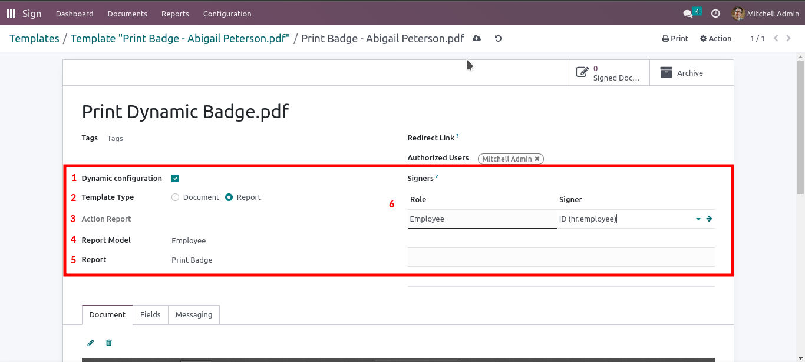

Go to created Signature Template Properties .

Dynamic Signature Configuration Fields
-
Check Dynamic configuration to set the template model configuration.
-
Template types: Report or Document
-
Action report: Dynamic menu action showed in model Print menu.
-
Report Model: Select the model to set the signature request.
-
Report: Select the report to sign.
-
Signers: Select the field that refers to the contact who will sign the
report.\n Select the "ID" field to indicate that the person who will sign the document is the record
contact.
If you select report or document template type
-
Report: is used for PDF report in selected model.
-
Document: is used for any PDF document and it will be associated
to selected model.